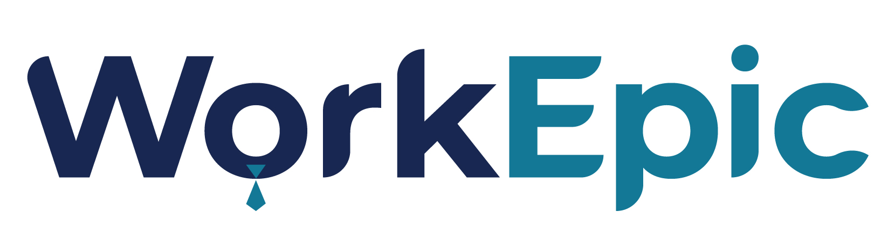

WorkEpic Index
The WorkEpic Index is a self-assessment tool designed to determine your unique classification based on your honest responses to a series of questions.
Upon completing the test, you'll receive a detailed report and your WorkEpic Index score for a fixed fee of R99.
Kindly clear your browser history after the previous attempt, should you wish to retake the test on the same device or track your WorkEpic Index score on a regular basis.
Sign up or log in to access the test and discover your WorkEpic Index today!
Sign In